Edição expandida
Anjo Devorador
- Webnovel, publicada em capítulos
- Capítulo novo todo dia
- Em português (a língua original) e em inglês
- Leitura grátis na Webnovel, a plataforma oficial
- Se o projeto crescer, pode ganhar edição física

Capítulo novo todo dia
Em inglês: Devouring Angel
Abre a Webnovel, a plataforma oficial. Não precisa de conta para ler.
O mundo está virando cinzas. Entre o rugido de dragões e a corrupção dos Voidrins, a humanidade se agarra a uma última e misteriosa esperança de sobrevivência. No centro deste caos, o jovem Vitalista Azuos desperta em uma floresta, sem memórias e sem destino. Enquanto luta para não ser consumido por um mundo que morre, Azuos busca um propósito — mas quanto mais perto ele chega da verdade, mais percebe que seu passado esquecido pode ser uma ameaça maior do que os monstros que cruzam os céus.
Anjo Devorador e As Cinzas do Amanhã contam a mesma história. O que muda é o tamanho e o formato.
Edição expandida

Edição compacta
E-book: fica no seu inventário depois da compra. Livro físico: vendido pela Uiclap, com o prazo da plataforma.
Sim. Anjo Devorador e As Cinzas do Amanhã contam a história de Azuos em Caelum. Uma é a edição expandida, em webnovel; a outra, a edição compacta, em romance.
O tamanho e o formato. Anjo Devorador é a edição expandida: sai em capítulos, todo dia, na Webnovel. As Cinzas do Amanhã é a edição compacta, em romance: uma saga com 5 livros planejados, e o volume 1 já está à venda.
Pela webnovel, que é a versão completa e atualizada todo dia. O livro é a versão compacta, para quem prefere romance.
Por enquanto, não. O foco é a webnovel; se o projeto crescer, Anjo Devorador pode ganhar uma edição física. Quem quer a história no papel hoje encontra o volume 1 de As Cinzas do Amanhã.
Anjo Devorador sai em português, a língua original, e em inglês, com o título Devouring Angel. A versão em inglês é traduzida com auxílio de IA, como o autor explica na própria Webnovel. As Cinzas do Amanhã está em português.
Tudo aqui já apareceu nos capítulos publicados. O resto, você descobre lendo.
O mundo se chama Caelum. A história se passa em Sublicus, o continente conhecido, onde ficam os reinos, os clãs e as cidades. Há outras terras além dos oceanos, mas atravessá-los é mortal, e poucos retornam.
No horizonte, visível de qualquer ponto do continente, ergue-se uma Torre imensa que desaparece no céu. Todos podem vê-la, mas ninguém sabe o que ela é. Ela é chamada de “a Semente do Mundo”.
Nenhuma cidade sobreviveria a céu aberto. As grandes cidades se protegem sob cúpulas e barreiras mágicas que impedem a entrada de monstros e dragões. Enquanto a cúpula resistir, a cidade vive.
A civilização depende da união entre magia e tecnologia. Cristais de mana alimentam máquinas, muralhas e as próprias cúpulas, e equipamentos encantados fazem parte do cotidiano.
O maior terror de Caelum: colossais, poderosos e inteligentes. Um soldado comum não consegue derrotar um. Eles não negociam; destroem tudo em seu caminho.
Os monstros são classificados pela Classe: Fera, Monstro, Demônio e Voidrin. Os Voidrins nascem da Energia Negativa, têm inteligência igual ou superior à humana e são as criaturas mais perigosas que se conhecem.
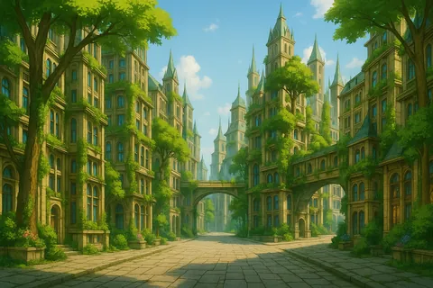
A Nação da Diversidade e Liberdade: uma democracia multicultural onde humanos, elfos, magos, vitalistas e inertes convivem. A capital, Lunaris Fortuna, é a cidade mais próspera do continente.
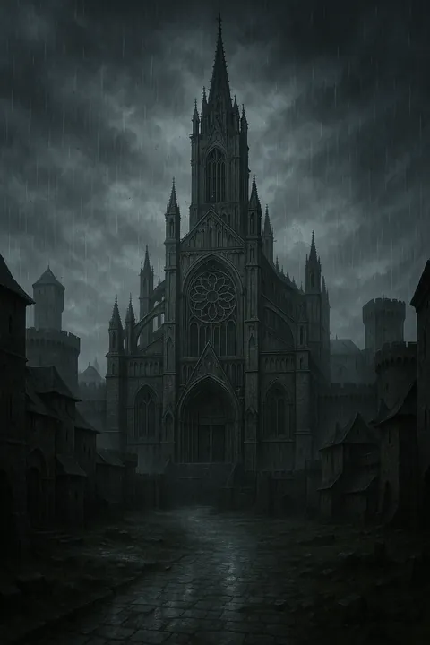
A Nação da Ordem e Perfeição: uma teocracia da Pureza, liderada por uma Suma Sacerdotisa. Lá, os inertes são o povo puro, e os vitalistas são perseguidos como impuros. Aeon e Kaleidos já se enfrentaram em guerras e seguem rivais.
O lar do Clã da Lua, onde Azuos é acolhido e começa a treinar.
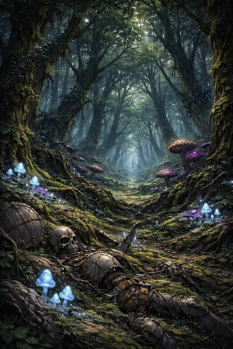
Azuos desperta perto da Floresta Negra e sobrevive à Floresta Lupina antes de chegar ao Clã da Lua.
Além das nações, Sublicus tem quatro grandes clãs, cada um com seu território. Juntos, eles mantêm a paz entre Kaleidos e Aeon, e boa parte da política e das guerras do continente gira em torno deles.
Perto de Kaleidos. Forma os caçadores e assassinos mais letais de Sublicus.
Também fica perto de Kaleidos.
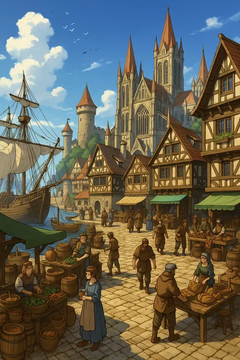
Ocupa a fronteira entre as duas nações.
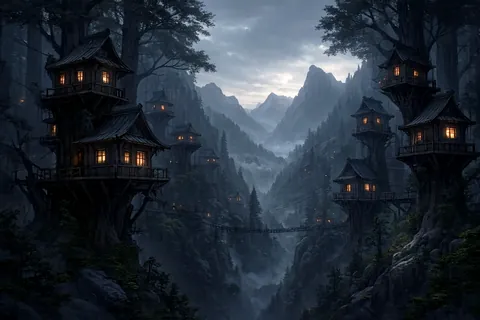
Fica dentro do território de Aeon.
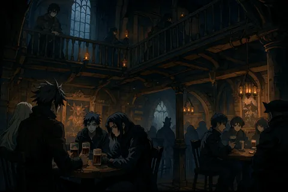
A maior organização de Sublicus: neutra e presente em todo lugar. Avalia cada aventureiro em provas práticas e lhe dá um Rank, de E (o mais baixo) a S (o mais alto). O Rank mede a capacidade comprovada; os Elos, o poder bruto.
Toda magia vem de três energias. A Energia Vital (mana) é o combustível das habilidades e dos feitiços; todos a possuem. A Energia Positiva e a Energia Negativa nascem das emoções: a positiva eleva, a negativa corrompe, e acumulá-la é perigoso e condenado.
As pessoas se dividem pela Energia Vital excedente. Os Inertes não têm excedente e seguem caminhos físicos. Os Magos têm o bastante para aprender magia. Os Vitalistas não aprendem magia: nascem com uma única habilidade, só deles.
A habilidade de um Vitalista se chama Aspecto, e nenhum se repete entre duas pessoas. Um Vitalista pode tomar a habilidade de outro; por isso, e por guerras antigas, eles são temidos, odiados e caçados. Muitos se passam por Magos.
Quem cultiva forja Elos dentro de si, também chamados de Núcleos ou Chacras: centros de energia que acumulam poder. O mundo conhece até cinco; um sexto é só especulação. Pessoas e criaturas são medidas por essa contagem.
É proibida e condenada em todo o continente. Não usa mana, e sim rituais e sacrifícios, por isso qualquer pessoa pode praticá-la.
A profissão se escolhe pela aptidão, porque a escolha errada pode ser fatal. De combate: Guerreiro, Colosso, Monge, Ladino e Caçador. Mágicas: Mago, Druida e Sacerdote.
Toque num selo para conhecer o personagem.
Nomes deste mundo que ainda não chegaram aos capítulos.
A verdade por trás da Marca Negra começa a emergir.
Nada se sabe sobre sua origem.
Seus feitos desafiam a lógica e sua presença intimida até os mais experientes.
O sol que sangra.
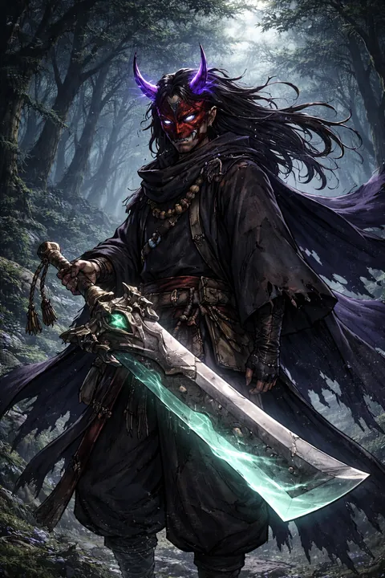
Ninguém jamais retornou para confirmar.
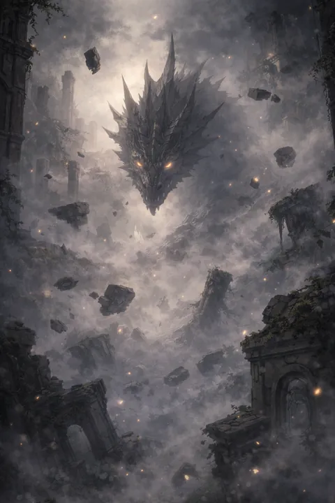
Ele aparece apenas quando o destino encontra uma alma incomum.
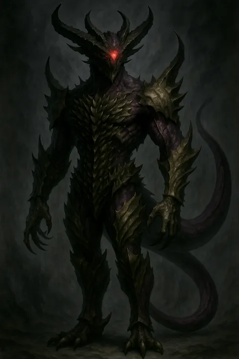
Encontrar um Ancião é compreender, em segundos, o que é insignificância.
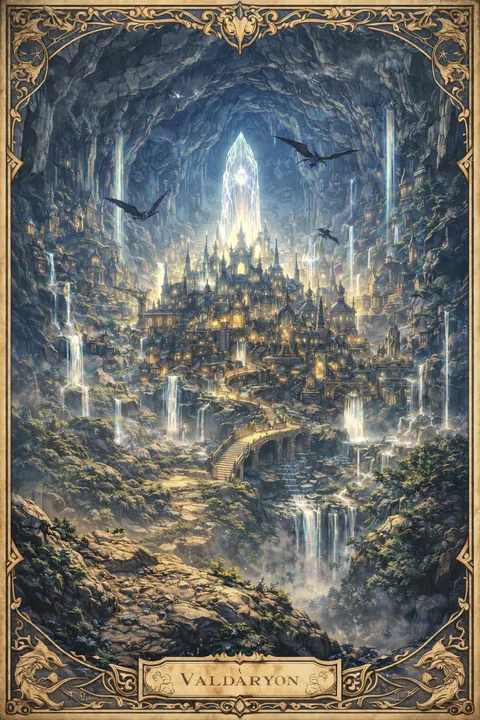
Seja mito ou verdade, ninguém jamais viu o lugar.
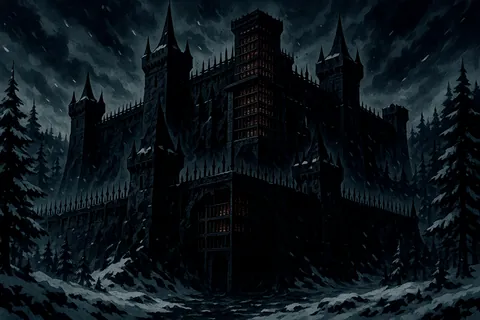
Ninguém sabe quantos são. Nem onde estão.
A Legião Negra não é apenas um exército — é uma ideia.
Pode queimar, expor e julgar.
Poder rápido — cobra sanidade, humanidade e destino.
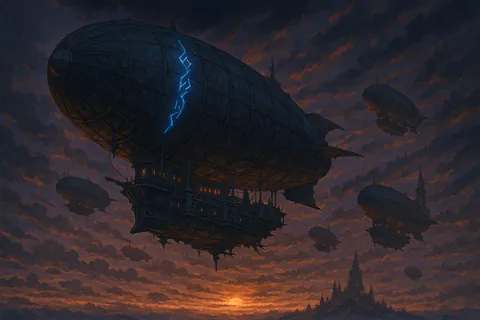
Foram projetados para operar em altitudes que nem mesmo dragões ousam alcançar.
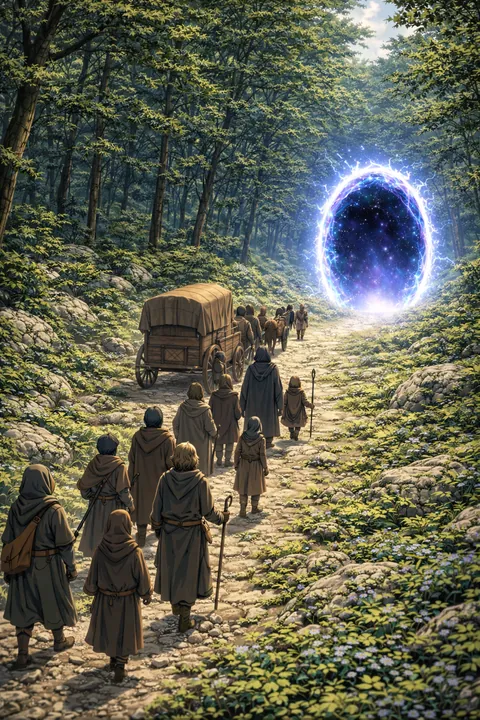
Viajar por um portal é rápido. Mas nunca totalmente seguro.
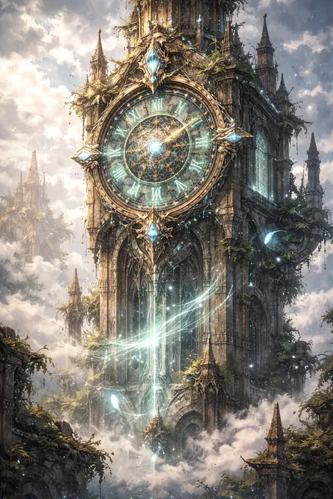
Relógios rúnicos não medem o tempo. Eles o registram.
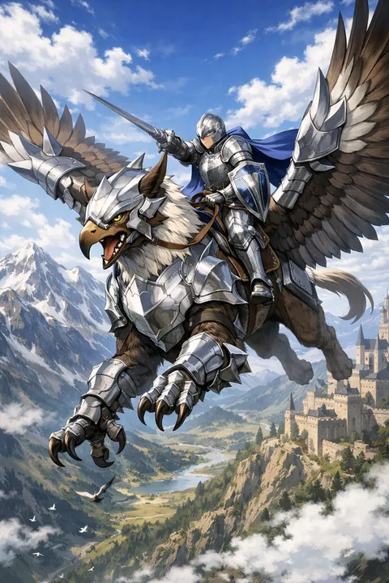
Montar uma criatura viva não é dominação. É sobrevivência compartilhada.
As Cinzas do Amanhã — Vol. 1, a edição compacta em romance.
Comprar o e-book — R$ 14,97 Livro físico (Uiclap)